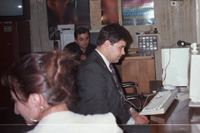
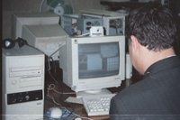
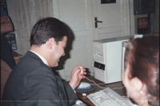

|
THE SECOND VIDEOCONFERENCE:
After midnight in Yerevan
The second 3PN
videoconference was more formal in nature than the first. It took
place as part of the AGBU Manoogian Demirdjian School annual
festival on May 31, at half past noon, Los Angeles time. With a
twelve hour time difference, this meant that it was past midnight
in Yerevan, where they had entered the following day, and were
already in the month of June. The Students in Yerevan could not be
present at that hour. Instead they were represented by the
principal of school #198, Justice Minister David Harutyunyan and
Anahit Voskanian, the teacher in charge of the 3PN at the school.
Mr.
Harutyunyan on-line during the videoconference


 |
Also present was the General coordinator of the Project, Marie
Lou Papazian, who was in Yerevan at the time. Students in Los
Angeles took advantage of the video and voice connection to ask a
series of questions which Mr. Harutyunyan answered in a
spontanious and engaging manner.
> The
third videoconference - Beirut . Motreal
<
Back to the Resource Center
|